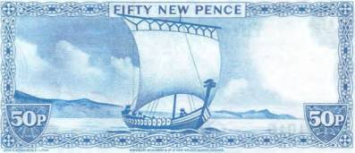
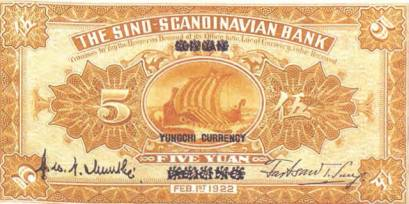

Тайны бумажных денег : «Первооткрыватели» Америки — а еще там были викинги…

В мемориальном парке Александрии (США) на каменном постаменте замер огромный викинг из бетона. А на его массивном щите начертаны удивительные слова: «Александрия: колыбель Америки». Что бы это значило? Как следует понимать это более чем смелое заявление? Викинги в Америке! Не те ли это морские разбойники раннего Средневековья (VII–XI вв.), которые смело пускались в дальние плавания на ладьях-дракарах и долгое время держали в страхе все европейское побережье от Северного моря до Средиземного (Корсика)? Изображение викингов и их боевого корабля — дракара — можно встретить на боне острова Мэн [16]в 50 новых пенсов 1972 г. (рис. 73).

Оказывается, факт открытия викингами Северной Америки задолго до знаменитого генуэзца был признан еще в начале XX в. Правда, каких-либо веских доказательств этой смелой версии на суд общественности представлено не было. Само по себе это утверждение базировалось на средневековых скандинавских сагах, которые впервые были записаны не раньше XIII в. Хотя в научных кругах и известно несколько чрезвычайно интересных артефактов, происхождение которых до конца не выяснено. В первую очередь, это так называемый Кенсингтонский рунный камень из Миннесоты, на котором высечены древние руны [17]. Он был обнаружен в конце 1898 г. вблизи города Кенсингтона человеком по имени Олаф Охман. Олаф был фермером и сделал свою сенсационную находку, когда корчевал пни на участке возле дома. Текст на камне прочитали так: «Восемь готов и 22 норвежца отправились исследовать земли, лежащие к западу от Винланда. Мы разбили лагерь у двух шхер в одном дне пути к северу от этого камня… Год 1362». О земле Винланд («земля (страна) винограда»), лежавшей далеко на западе, было известно уже давно, и прежде всего из древнескандинавского эпоса «Сага об Эйрике Рыжем». Речь в нем как раз и шла об открытии викингами Америки и первой очень неприятной встрече с аборигенами. Описываемые в саге события разворачивались около 1000 г. н. э.

Сторонники этой версии открытия Нового Света уверены, что северные воины-мореходы колонизировали, например, Гренландию еще раньше. На южной оконечности этого самого большого острова Земли у них даже были постоянные поселения. А уж до материка там было и вовсе рукой подать. Несмотря на свою внешнюю хрупкость, ладьи варягов были очень прочные. Достигалось это еще и тем, что викинги использовали для скрепления досок китовый ус и корни деревьев. К тому же, в отличие от громоздких кораблей Колумба, дракары могли идти и на веслах. А в случае необходимости их можно было перетаскивать по льду. Еще одно изображение этого изящного судна, буг которого часто украшала личина дракона (отсюда и название «дракар»), можно встретить на боне китайско-скандинавского банка 1922 г. (рис. 74).
Известно, что свои ладьи викинги нередко раскрашивали в самые яркие цвета, чтобы напугать своих соперников, а то и просто произвести впечатление. Кстати, парус судна морские разбойники берегли, пожалуй, похлеще, чем боевые полки свои знамена. Парус считался у викингов царским подарком, и вожди всегда старались передать свой парус по наследству.
Помимо уже названного Кенсингтонского камня, на североамериканском континенте были найдены и другие следы пребывания там суровых [18]«гостей» из Европы.
Так, были обнаружены некоторые предметы нехитрой утвари и следы жилья. А кроме того, достоверно известно о находке на американском побережье монет викингов.